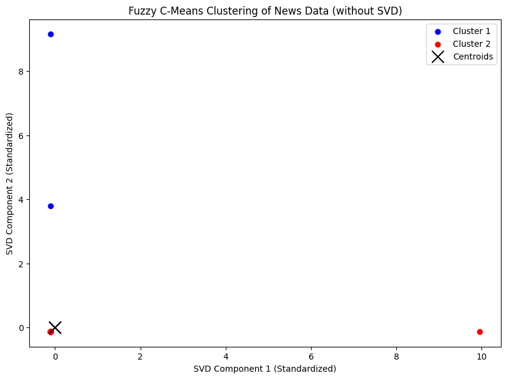
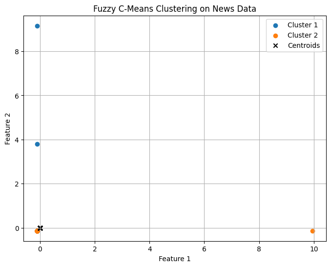
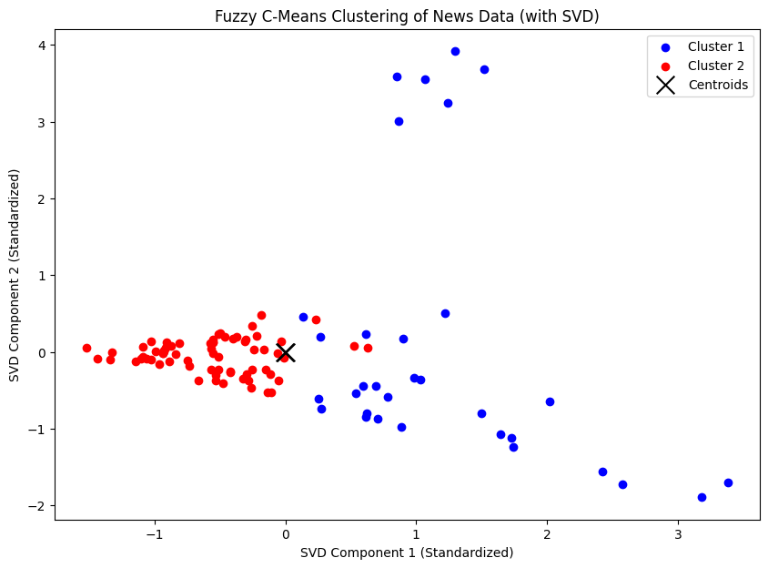
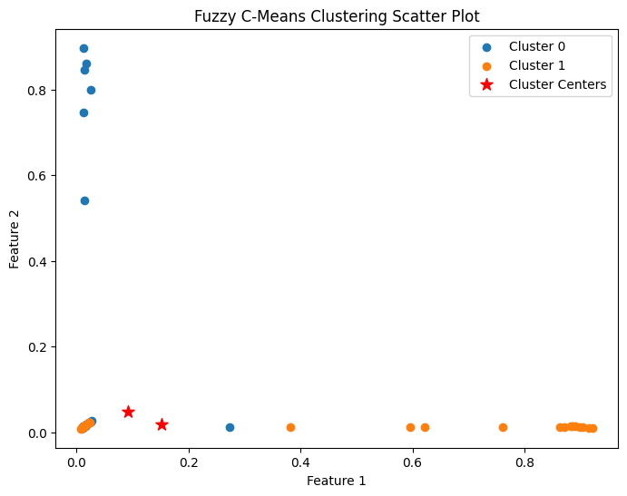

NAMA : Mohammad Iqbal Surya Ramadhan
NIM : 210411100002
MATA KULIAH : Pencarian dan Penambangan Web - A
Tugas 7 : Clustering Berita menggunakan Fuzzy C-Means#
Test fuzzy c-means 1#
from google.colab import drive
drive.mount('/content/drive')
---------------------------------------------------------------------------
KeyboardInterrupt Traceback (most recent call last)
<ipython-input-1-d5df0069828e> in <cell line: 2>()
1 from google.colab import drive
----> 2 drive.mount('/content/drive')
/usr/local/lib/python3.10/dist-packages/google/colab/drive.py in mount(mountpoint, force_remount, timeout_ms, readonly)
98 def mount(mountpoint, force_remount=False, timeout_ms=120000, readonly=False):
99 """Mount your Google Drive at the specified mountpoint path."""
--> 100 return _mount(
101 mountpoint,
102 force_remount=force_remount,
/usr/local/lib/python3.10/dist-packages/google/colab/drive.py in _mount(mountpoint, force_remount, timeout_ms, ephemeral, readonly)
135 )
136 if ephemeral:
--> 137 _message.blocking_request(
138 'request_auth',
139 request={'authType': 'dfs_ephemeral'},
/usr/local/lib/python3.10/dist-packages/google/colab/_message.py in blocking_request(request_type, request, timeout_sec, parent)
174 request_type, request, parent=parent, expect_reply=True
175 )
--> 176 return read_reply_from_input(request_id, timeout_sec)
/usr/local/lib/python3.10/dist-packages/google/colab/_message.py in read_reply_from_input(message_id, timeout_sec)
94 reply = _read_next_input_message()
95 if reply == _NOT_READY or not isinstance(reply, dict):
---> 96 time.sleep(0.025)
97 continue
98 if (
KeyboardInterrupt:
import pandas as pd
df = pd.read_csv("/content/drive/My Drive/PPWA/report/Tugas-PPWA/Hasil_Prepros.csv")
df.head()
| judul | tanggal | isi | kategori | cleansing | case_folding | tokenize | stopword_removal | |
|---|---|---|---|---|---|---|---|---|
| 0 | Nunggak 8 Bulan, Segini Pajak Ford Mustang Mil... | Kamis, 19 Sep 2024 13:05 WIB | Jakarta - Bareskrim Polri menyita aset senilai... | Otomotif | Jakarta Bareskrim Polri menyita aset senilai ... | jakarta bareskrim polri menyita aset senilai ... | ['jakarta', 'bareskrim', 'polri', 'menyita', '... | jakarta bareskrim polri menyita aset senilai r... |
| 1 | Bos Ford Kaget usai Jajal Mobil China: Mereka ... | Kamis, 19 Sep 2024 12:33 WIB | Jakarta - Chief Executive Officer (CEO) Ford, ... | Otomotif | Jakarta Chief Executive Officer CEO Ford Jim ... | jakarta chief executive officer ceo ford jim ... | ['jakarta', 'chief', 'executive', 'officer', '... | jakarta chief executive officer ceo ford jim f... |
| 2 | Tarif Tol Dalam Kota Naik Jadi Segini, Berlaku... | Kamis, 19 Sep 2024 12:08 WIB | Jakarta - Jasa Marga mengumumkan kenaikan tari... | Otomotif | Jakarta Jasa Marga mengumumkan kenaikan tarif... | jakarta jasa marga mengumumkan kenaikan tarif... | ['jakarta', 'jasa', 'marga', 'mengumumkan', 'k... | jakarta jasa marga mengumumkan kenaikan tarif ... |
| 3 | Pak RT Aleix Espargaro Tak Sabar Balapan Terak... | Kamis, 19 Sep 2024 11:40 WIB | Jakarta - Pebalap Aprilia asal Spanyol, Aleix ... | Otomotif | Jakarta Pebalap Aprilia asal Spanyol Aleix Es... | jakarta pebalap aprilia asal spanyol aleix es... | ['jakarta', 'pebalap', 'aprilia', 'asal', 'spa... | jakarta pebalap aprilia spanyol aleix espargar... |
| 4 | Angkot Listrik Bakal Diuji Coba di Jakarta | Kamis, 19 Sep 2024 11:18 WIB | Jakarta - PT Transportasi Jakarta (TransJakart... | Otomotif | Jakarta PT Transportasi Jakarta TransJakarta ... | jakarta pt transportasi jakarta transjakarta ... | ['jakarta', 'pt', 'transportasi', 'jakarta', '... | jakarta pt transportasi jakarta transjakarta k... |
!pip install scikit-fuzzy
# Import libraries yang diperlukan
import pandas as pd
import numpy as np
import matplotlib.pyplot as plt
import skfuzzy as fuzz
from sklearn.feature_extraction.text import TfidfVectorizer
from sklearn.preprocessing import StandardScaler
Collecting scikit-fuzzy
Downloading scikit_fuzzy-0.5.0-py2.py3-none-any.whl.metadata (2.6 kB)
Downloading scikit_fuzzy-0.5.0-py2.py3-none-any.whl (920 kB)
?25l ━━━━━━━━━━━━━━━━━━━━━━━━━━━━━━━━━━━━━━━━ 0.0/920.8 kB ? eta -:--:--
━━━━━━╸━━━━━━━━━━━━━━━━━━━━━━━━━━━━━━━━━ 153.6/920.8 kB 4.4 MB/s eta 0:00:01
━━━━━━━━━━━━━━━━━━━━━━━━━━━━━━━━━━━━━━━╸ 911.4/920.8 kB 13.6 MB/s eta 0:00:01
━━━━━━━━━━━━━━━━━━━━━━━━━━━━━━━━━━━━━━━━ 920.8/920.8 kB 11.2 MB/s eta 0:00:00
?25hInstalling collected packages: scikit-fuzzy
Successfully installed scikit-fuzzy-0.5.0
texts = df['stopword_removal']
# Preprocessing: TF-IDF
tfidf = TfidfVectorizer()
tfidf_matrix = tfidf.fit_transform(texts)
tfidf_array = tfidf_matrix.toarray()
# Normalisasi fitur
scaler = StandardScaler()
X_scaled = scaler.fit_transform(tfidf_array)
algoritma Fuzzy C-Means Clustering
n_clusters = 2 # Jumlah cluster yang diinginkan
cntr, u, _, _, _, _, _ = fuzz.cluster.cmeans(
X_scaled.T, c=n_clusters, m=2, error=0.001, maxiter=1000, init=None
)
# Menentukan cluster untuk setiap data berdasarkan keanggotaan tertinggi
cluster_labels = np.argmax(u, axis=0)
# Visualisasi hasil klasterisasi
plt.figure(figsize=(10, 7))
colors = ['b', 'r']
for i in range(n_clusters):
plt.scatter(X_scaled[cluster_labels == i, 0], X_scaled[cluster_labels == i, 1],
color=colors[i], label=f'Cluster {i+1}')
# Menampilkan pusat cluster
plt.scatter(cntr[:, 0], cntr[:, 1], marker='x', s=200, color='k', label='Centroids')
plt.xlabel('SVD Component 1 (Standardized)')
plt.ylabel('SVD Component 2 (Standardized)')
plt.title('Fuzzy C-Means Clustering of News Data (without SVD)')
plt.legend()
plt.show()

Fuzzy C-Means Clustering untuk mengelompokkan data dengan visualisasi hasil dan evaluasi kinerja klasterisasi menggunakan nilai Fuzzy Partition Coefficient (FPC).
# Tentukan jumlah cluster dan parameter fuzziness
n_clusters = 2
m = 2 # Parameter fuzziness
# Terapkan Fuzzy C-Means
cntr, u, u0, d, jm, p, fpc = fuzz.cluster.cmeans(
X_scaled.T, n_clusters, m, error=0.001, maxiter=1000, init=None
)
# Tentukan keanggotaan cluster
cluster_membership = np.argmax(u, axis=0)
# Visualisasi Hasil Clustering
plt.figure(figsize=(8, 6))
for i in range(n_clusters):
plt.scatter(X_scaled[cluster_membership == i, 0], X_scaled[cluster_membership == i, 1], label=f'Cluster {i+1}')
# Tampilkan centroid
plt.scatter(cntr[0], cntr[1], marker='x', color='black', label='Centroids')
plt.title('Fuzzy C-Means Clustering on News Data')
plt.xlabel('Feature 1')
plt.ylabel('Feature 2')
plt.legend()
plt.grid(True)
plt.show()
# Evaluasi Hasil
print("Fuzzy Partition Coefficient (FPC):", fpc)

Fuzzy Partition Coefficient (FPC): 0.5000000000009149
Test fuzzy c-means 2#
from google.colab import drive
drive.mount('/content/drive')
Drive already mounted at /content/drive; to attempt to forcibly remount, call drive.mount("/content/drive", force_remount=True).
import pandas as pd
df = pd.read_csv("/content/drive/My Drive/PPWA/report/Tugas-PPWA/Hasil_Prepros.csv")
df.head()
| judul | tanggal | isi | kategori | cleansing | case_folding | tokenize | stopword_removal | |
|---|---|---|---|---|---|---|---|---|
| 0 | Nunggak 8 Bulan, Segini Pajak Ford Mustang Mil... | Kamis, 19 Sep 2024 13:05 WIB | Jakarta - Bareskrim Polri menyita aset senilai... | Otomotif | Jakarta Bareskrim Polri menyita aset senilai ... | jakarta bareskrim polri menyita aset senilai ... | ['jakarta', 'bareskrim', 'polri', 'menyita', '... | jakarta bareskrim polri menyita aset senilai r... |
| 1 | Bos Ford Kaget usai Jajal Mobil China: Mereka ... | Kamis, 19 Sep 2024 12:33 WIB | Jakarta - Chief Executive Officer (CEO) Ford, ... | Otomotif | Jakarta Chief Executive Officer CEO Ford Jim ... | jakarta chief executive officer ceo ford jim ... | ['jakarta', 'chief', 'executive', 'officer', '... | jakarta chief executive officer ceo ford jim f... |
| 2 | Tarif Tol Dalam Kota Naik Jadi Segini, Berlaku... | Kamis, 19 Sep 2024 12:08 WIB | Jakarta - Jasa Marga mengumumkan kenaikan tari... | Otomotif | Jakarta Jasa Marga mengumumkan kenaikan tarif... | jakarta jasa marga mengumumkan kenaikan tarif... | ['jakarta', 'jasa', 'marga', 'mengumumkan', 'k... | jakarta jasa marga mengumumkan kenaikan tarif ... |
| 3 | Pak RT Aleix Espargaro Tak Sabar Balapan Terak... | Kamis, 19 Sep 2024 11:40 WIB | Jakarta - Pebalap Aprilia asal Spanyol, Aleix ... | Otomotif | Jakarta Pebalap Aprilia asal Spanyol Aleix Es... | jakarta pebalap aprilia asal spanyol aleix es... | ['jakarta', 'pebalap', 'aprilia', 'asal', 'spa... | jakarta pebalap aprilia spanyol aleix espargar... |
| 4 | Angkot Listrik Bakal Diuji Coba di Jakarta | Kamis, 19 Sep 2024 11:18 WIB | Jakarta - PT Transportasi Jakarta (TransJakart... | Otomotif | Jakarta PT Transportasi Jakarta TransJakarta ... | jakarta pt transportasi jakarta transjakarta ... | ['jakarta', 'pt', 'transportasi', 'jakarta', '... | jakarta pt transportasi jakarta transjakarta k... |
!pip install scikit-fuzzy
# Import libraries yang diperlukan
import numpy as np
import pandas as pd
import skfuzzy as fuzz
import matplotlib.pyplot as plt
from sklearn.feature_extraction.text import TfidfVectorizer
from sklearn.decomposition import TruncatedSVD
from sklearn.preprocessing import StandardScaler
Requirement already satisfied: scikit-fuzzy in /usr/local/lib/python3.10/dist-packages (0.5.0)
texts = df['stopword_removal']
# Preprocessing: TF-IDF
tfidf = TfidfVectorizer()
tfidf_matrix = tfidf.fit_transform(texts)
tfidf_array = tfidf_matrix.toarray()
# Reduksi dimensi menggunakan SVD
svd = TruncatedSVD(n_components=5, random_state=0)
data_2d = svd.fit_transform(tfidf_array)
data_2d.shape
(100, 5)
# Normalisasi dengan StandardScaler
scaler = StandardScaler()
data_2d_normalized = scaler.fit_transform(data_2d)
# Tetapkan random seed u
np.random.seed(25)
# Fuzzy C-Means Clustering
n_clusters = 2
cntr, u, _, _, _, _, _ = fuzz.cluster.cmeans(
data_2d_normalized.T, c=n_clusters, m=9, error=0.001, maxiter=1000, init=None
)
# Menentukan cluster untuk setiap data berdasarkan keanggotaan tertinggi
cluster_labels = np.argmax(u, axis=0)
# Menambahkan hasil klasterisasi ke dalam DataFrame
df['Cluster'] = cluster_labels
# Menampilkan jumlah data pada setiap cluster
cluster_counts = df['Cluster'].value_counts()
print("Jumlah data pada setiap cluster:")
print(cluster_counts)
df_filtered = df[['judul', 'kategori', 'Cluster']]
df_filtered
Jumlah data pada setiap cluster:
Cluster
1 68
0 32
Name: count, dtype: int64
| judul | kategori | Cluster | |
|---|---|---|---|
| 0 | Nunggak 8 Bulan, Segini Pajak Ford Mustang Mil... | Otomotif | 0 |
| 1 | Bos Ford Kaget usai Jajal Mobil China: Mereka ... | Otomotif | 0 |
| 2 | Tarif Tol Dalam Kota Naik Jadi Segini, Berlaku... | Otomotif | 1 |
| 3 | Pak RT Aleix Espargaro Tak Sabar Balapan Terak... | Otomotif | 1 |
| 4 | Angkot Listrik Bakal Diuji Coba di Jakarta | Otomotif | 1 |
| ... | ... | ... | ... |
| 95 | Suku Bunga BI Dipangkas Jadi 6% Dinilai Berani | Keuangan | 0 |
| 96 | Prabowo Ingatkan Perang Makin Marak hingga Sal... | Keuangan | 1 |
| 97 | Ditjen Pajak Respons Kabar 6 Juta NPWP Bocor, ... | Keuangan | 0 |
| 98 | Buruh Waswas Kisruh di Kadin Pengaruhi Penetap... | Keuangan | 1 |
| 99 | PIS Beberkan Rencana Tekan Emisi Karbon di Mas... | Keuangan | 1 |
100 rows × 3 columns
filename = 'HasilfilteredSvd.csv' # Define the filename
df_filtered.to_csv(filename, index=False)
print(f"CSV file '{filename}' saved successfully!")
CSV file 'HasilfilteredSvd.csv' saved successfully!
# Visualisasi hasil klasterisasi
plt.figure(figsize=(10, 7))
colors = ['b', 'r']
for i in range(n_clusters):
plt.scatter(data_2d_normalized[cluster_labels == i, 0], data_2d_normalized[cluster_labels == i, 1],
color=colors[i], label=f'Cluster {i+1}')
# Menampilkan pusat cluster
plt.scatter(cntr[:, 0], cntr[:, 1], marker='x', s=200, color='k', label='Centroids')
plt.xlabel('SVD Component 1 (Standardized)')
plt.ylabel('SVD Component 2 (Standardized)')
plt.title('Fuzzy C-Means Clustering of News Data (with SVD)')
plt.legend()
plt.show()

Test fuzzy c-means 3#
from google.colab import drive
drive.mount('/content/drive')
Drive already mounted at /content/drive; to attempt to forcibly remount, call drive.mount("/content/drive", force_remount=True).
import pandas as pd
df = pd.read_csv("/content/drive/My Drive/PPWA/report/Tugas-PPWA/Hasil_Prepros.csv")
df.head()
| judul | tanggal | isi | kategori | cleansing | case_folding | tokenize | stopword_removal | |
|---|---|---|---|---|---|---|---|---|
| 0 | Nunggak 8 Bulan, Segini Pajak Ford Mustang Mil... | Kamis, 19 Sep 2024 13:05 WIB | Jakarta - Bareskrim Polri menyita aset senilai... | Otomotif | Jakarta Bareskrim Polri menyita aset senilai ... | jakarta bareskrim polri menyita aset senilai ... | ['jakarta', 'bareskrim', 'polri', 'menyita', '... | jakarta bareskrim polri menyita aset senilai r... |
| 1 | Bos Ford Kaget usai Jajal Mobil China: Mereka ... | Kamis, 19 Sep 2024 12:33 WIB | Jakarta - Chief Executive Officer (CEO) Ford, ... | Otomotif | Jakarta Chief Executive Officer CEO Ford Jim ... | jakarta chief executive officer ceo ford jim ... | ['jakarta', 'chief', 'executive', 'officer', '... | jakarta chief executive officer ceo ford jim f... |
| 2 | Tarif Tol Dalam Kota Naik Jadi Segini, Berlaku... | Kamis, 19 Sep 2024 12:08 WIB | Jakarta - Jasa Marga mengumumkan kenaikan tari... | Otomotif | Jakarta Jasa Marga mengumumkan kenaikan tarif... | jakarta jasa marga mengumumkan kenaikan tarif... | ['jakarta', 'jasa', 'marga', 'mengumumkan', 'k... | jakarta jasa marga mengumumkan kenaikan tarif ... |
| 3 | Pak RT Aleix Espargaro Tak Sabar Balapan Terak... | Kamis, 19 Sep 2024 11:40 WIB | Jakarta - Pebalap Aprilia asal Spanyol, Aleix ... | Otomotif | Jakarta Pebalap Aprilia asal Spanyol Aleix Es... | jakarta pebalap aprilia asal spanyol aleix es... | ['jakarta', 'pebalap', 'aprilia', 'asal', 'spa... | jakarta pebalap aprilia spanyol aleix espargar... |
| 4 | Angkot Listrik Bakal Diuji Coba di Jakarta | Kamis, 19 Sep 2024 11:18 WIB | Jakarta - PT Transportasi Jakarta (TransJakart... | Otomotif | Jakarta PT Transportasi Jakarta TransJakarta ... | jakarta pt transportasi jakarta transjakarta ... | ['jakarta', 'pt', 'transportasi', 'jakarta', '... | jakarta pt transportasi jakarta transjakarta k... |
!pip install scikit-fuzzy
import numpy as np
import pandas as pd
import matplotlib.pyplot as plt
from sklearn.decomposition import LatentDirichletAllocation
from sklearn.feature_extraction.text import TfidfVectorizer
import skfuzzy as fuzz
Requirement already satisfied: scikit-fuzzy in /usr/local/lib/python3.10/dist-packages (0.5.0)
# Lakukan preprocessing data menggunakan TF-IDF
tfidf = TfidfVectorizer()
X = tfidf.fit_transform(df['stopword_removal']).toarray()
lda = LatentDirichletAllocation(n_components=9)
X_topic = lda.fit_transform(X)
# Implementasikan Fuzzy C-Means menggunakan Fuzzy library
n_clusters = 2
m = 8 # Fuzzy coefficient
max_iter = 1000
tol = 0.05
cntr, u, _, _, _, _, _ = fuzz.cluster.cmeans(X_topic.T, n_clusters, m, max_iter, tol)
# Dapatkan label cluster untuk setiap data
labels = np.argmax(u, axis=0)
import matplotlib.pyplot as plt
import seaborn as sns
import numpy as np
# Buat plot scatter
plt.figure(figsize=(8, 6))
for i in range(n_clusters):
cluster_data = X_topic[labels == i]
plt.scatter(cluster_data[:, 0], cluster_data[:, 1], label=f'Cluster {i}')
plt.scatter(cntr[:, 0], cntr[:, 1], s=100, c='red', marker='*', label='Cluster Centers')
plt.title('Fuzzy C-Means Clustering Scatter Plot')
plt.xlabel('Feature 1')
plt.ylabel('Feature 2')
plt.legend()
plt.show()
